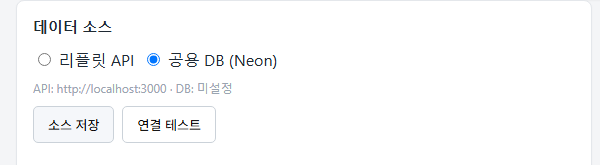

바탕화면의 "NCR RPA" 아이콘을 더블클릭하면 끝.
(아이콘이 없으면 rpa-ncr 폴더의 시작.bat 파일을 더블클릭. 처음 한 번만
바탕화면에 바로가기 만들기.bat 을 실행하면 다음부터는 바탕화면에서 바로 켤 수 있습니다.)
아래와 같은 콘솔이 뜨면 정상:
==================================================
NCR → UNIERP RPA 자동 입력 서버
http://127.0.0.1:8010
※ 이 창을 닫으면 서버가 종료됩니다
==================================================기본 브라우저가 http://127.0.0.1:8010 으로 자동 오픈됩니다.
| 번호 | 섹션 | 역할 |
|---|---|---|
| ① | 설정 점검 배너 | 필수 설정 누락 시 빨간 경고, 정상이면 ✓ 표시. 설치 직후 한 번만 확인. |
| ② | 데이터 소스 | 리플릿 API / Neon DB 중 어디서 보고를 받아올지 선택 (보통 공용 DB). |
| ③ | ERP 설정 | UNIERP 창 제목·실행경로·로그인PW 등. 한 번 맞춰두면 안 건드림. |
| ④ | 실행 | PENDING 조회 / ERP 창 확인 / 입력 시작·일시정지·중지. |
| ⑤ | 큐 | 현재 처리할 보고 목록과 상태(대기/진행/완료/실패). |
| ⑥ | 실시간 로그 | RPA가 한 줄씩 무슨 작업을 하는지 라이브 출력. |

PRIVATE/app_db.json 파일이 있는지, 인터넷 연결이 되는지 확인.
| 항목 | 값 |
|---|---|
| 창 제목 | UNIERP (고정) |
| 실행 경로 | 직장님 PC의 UNIERP 바로가기 경로 (예: c:/Users/<계정>/OneDrive/Desktop/UNIERP/UNIERP.appref-ms) |
| 로그인 비밀번호 | 직장님 ERP 비밀번호 (비워두면 본인이 직접 로그인 필요) |
| 대상 메뉴 | 부적합등록(S)(QD211MA1_CKO063) (고정) |
| 첫 필드 Tab 수 | 10 (캘리브레이션 완료값) |
| 저장 단축키 | ^s (Ctrl+S) |
| 그리드 열 | 비워둠 (단일 품목 모드) |
변경한 뒤 ERP 설정 저장 클릭.

| 버튼 | 동작 |
|---|---|
| PENDING 조회 | DB에서 sync_status=PENDING 보고를 받아 ⑤ 큐에 채움. |
| ERP 창 확인 | UNIERP 창이 떠 있는지 확인. 없으면 자동으로 실행 시도. |
| 입력 시작 | 큐의 보고를 1건씩 UNIERP 폼에 자동 입력. 각 보고 끝나면 검토 패널 표시. |
| 일시정지/재개 | 다음 키 입력 전 대기. 다시 누르면 재개. |
| 중지 | 즉시 중단. 처리 중이던 보고는 PENDING으로 복원. |
부적합등록(S) 검색해 폼을 한 번 띄워둡니다.
0건 이면 현재 처리할 신규 보고가 없다는 뜻 — 그냥 종료해도 됨.#7 공정: 'A01' 입력 OK).한 보고의 입력이 끝나면 자동으로 검토 패널이 열립니다 (다음 섹션 참고). 다 맞으면 완료 확인 → DB에 COMPLETED 마킹 → 다음 보고로 진행.
RPA가 17개 필드를 다 채운 뒤 화면이 다음과 같이 바뀝니다:
| # | 필드 | 값 | 방법 | 재실행 |
|---|---|---|---|---|
| 1 | 발행팀코드 | SH11610100 | type | 재실행 #1 |
| 2 | 부적합구분 | 3 | dropdown | 재실행 #2 |
| ... | (총 17행) | |||
위에 다음 두 버튼:
sync_status = COMPLETED 가 기록됩니다.
| 버튼 | 동작 | 언제 쓰나 |
|---|---|---|
| 일시정지/재개 | 현재 키 입력 끝낸 뒤 다음 단계 직전에 대기. 한 번 더 누르면 재개. | 잠깐 다른 일 처리해야 할 때 (전화·확인 등). 보고 처리 상태는 그대로 유지. |
| 중지 | 즉시 중단. 처리 중이던 보고는 PENDING으로 복원되어 다음에 다시 처리 가능. | 뭔가 잘못됐을 때 / 강제로 끊고 싶을 때. |
RPA가 일시정지 상태로 들어갑니다. 사용자가 직접:
매번 같은 코드에서 막힌다면 DB의 마스터 동기화 점검 (item_groups, vendors, processes).
config/field_mapping.json 의 좌표 재캘리브레이션 필요.RPA가 자동으로 에러창을 닫고 처리 종료. 어떤 필드에서 났는지 로그에 기록됨. 같은 보고가 PENDING으로 복원되며, 다음 회차에 재시도되지만 같은 데이터면 또 실패 가능 — 데이터 자체 점검 필요.
큐 테이블에 "실패" 표시된 보고. 더블클릭으로 펼쳐서 오류 원인 로그 확인:
| 단계 | 할 일 |
|---|---|
| 1 | UNIERP 켜고 로그인 |
| 2 | 부적합등록(S) 폼 한 번 직접 열어둠 |
| 3 | 바탕화면 "NCR RPA" 아이콘 더블클릭 → 브라우저 자동 오픈 확인 |
| 4 | PENDING 조회 → 큐 채워졌는지 확인 |
| 5 | ERP 창 확인 → "메인 창 찾음" 확인 |
| 6 | 입력 시작 → 마우스 안 만짐 |
| 7 | 한 건 끝나면 검토 → 완료 확인 → 다음 건 |
| 8 | 큐 다 비면 콘솔 닫아 종료 |